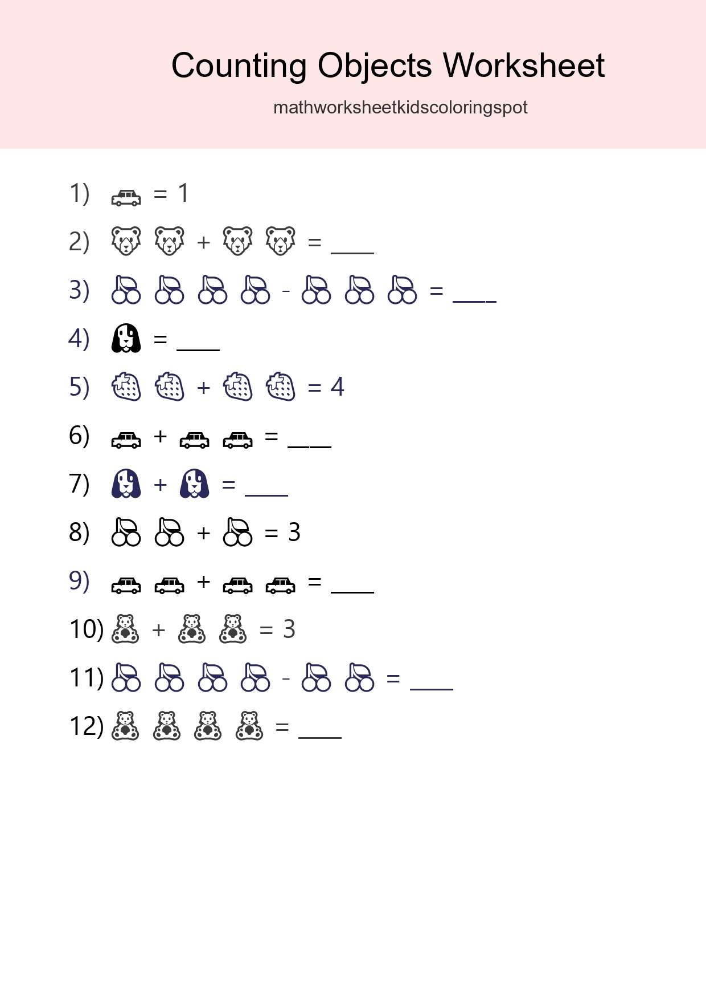
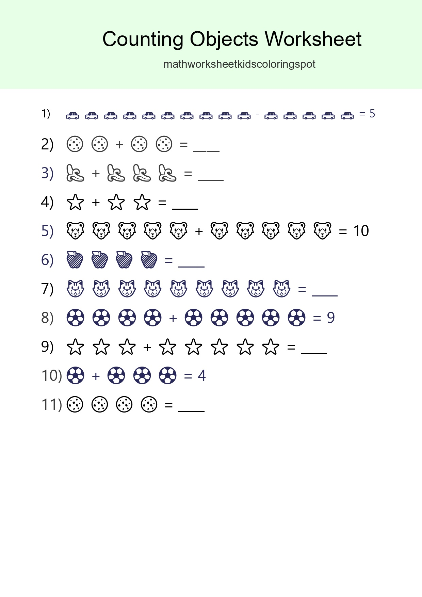
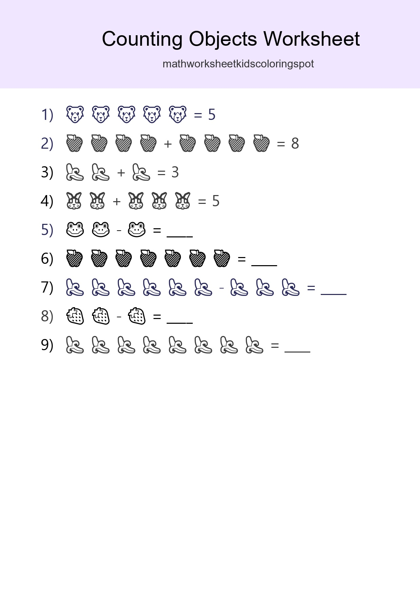
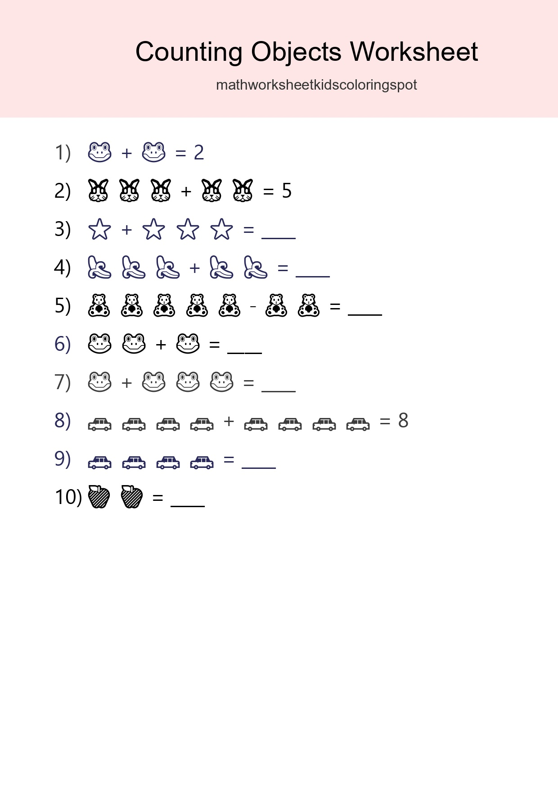
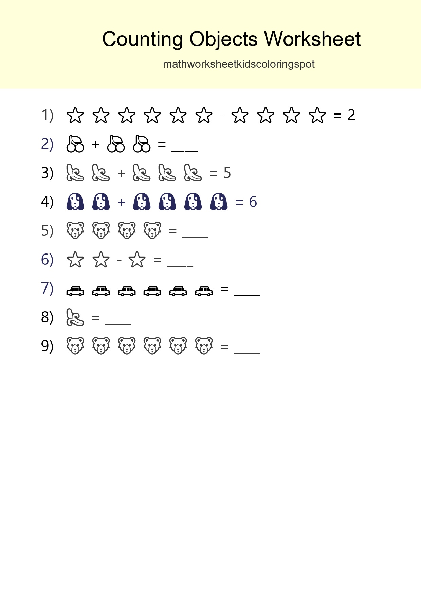

Free Counting Objects Worksheet For Pre-K Printable - Part 3

Kindergarten Count The Objects Worksheet - Part 15

Free Counting Objects Worksheet For Pre-K Printable - Part 27

Free Counting Objects Worksheet For Pre-K - Part 39

Pre-K Count The Objects Worksheet - Part 51

Free Counting Objects Worksheet For Kindergarten Printable - Part 63

Free Counting Objects Worksheet For Kindergarten Printable - Part 75

Learn Counting With Pictures Worksheet (Kindergarten) - Part 87

Learn Counting With Pictures Worksheet (Kindergarten) - Part 99

Learn Counting With Pictures Worksheet (Kindergarten) - Part 111

Free Counting Objects Worksheet For Pre-K - Part 123

Kindergarten Count The Objects Worksheet - Part 135

Pre-K Count The Objects Worksheet - Part 147

Free Counting Objects Worksheet For Kindergarten Printable - Part 159

Kindergarten Count The Objects Worksheet - Part 171

Learn Counting With Pictures Worksheet (Kindergarten) - Part 183